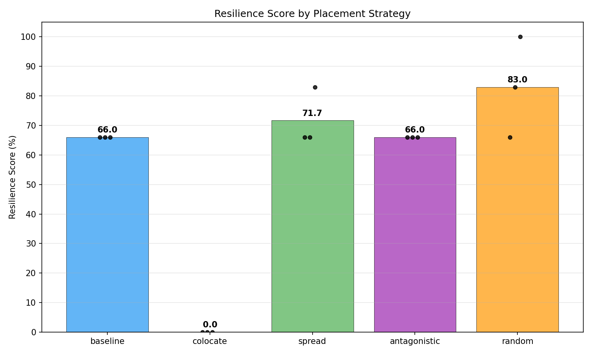
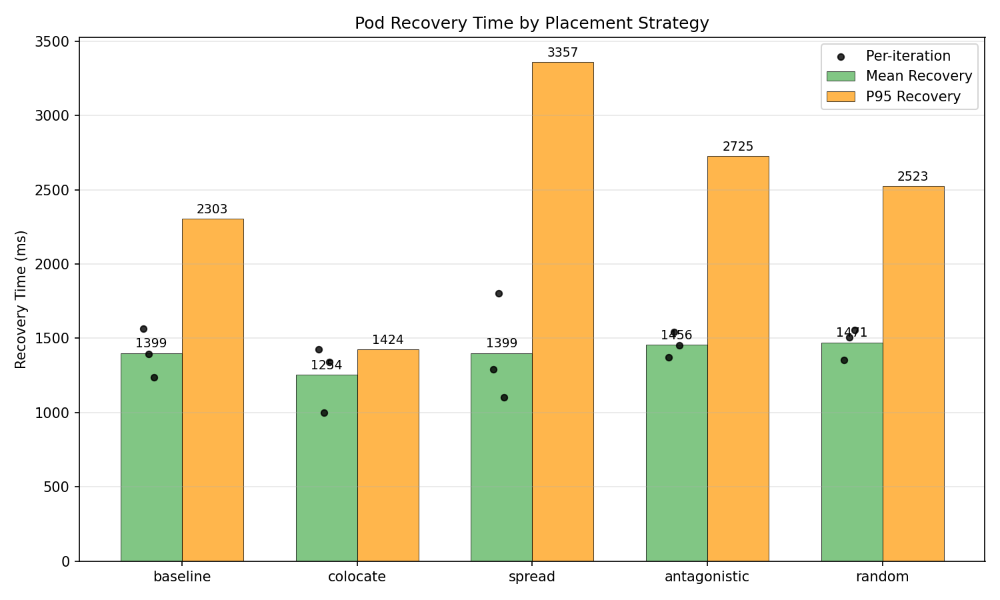
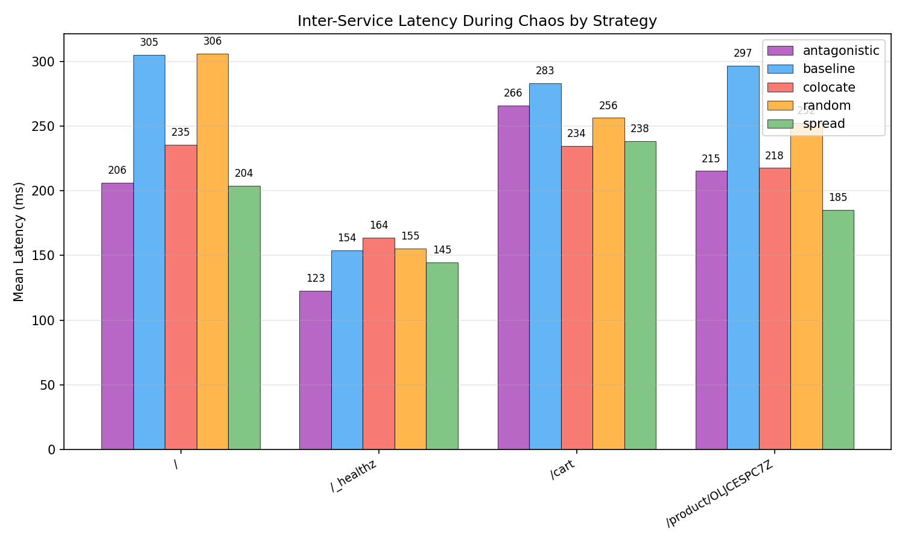
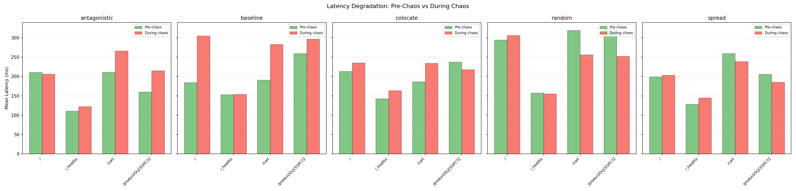
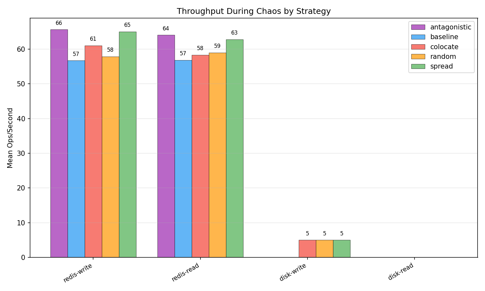
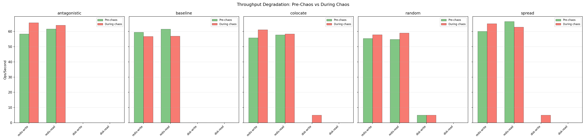
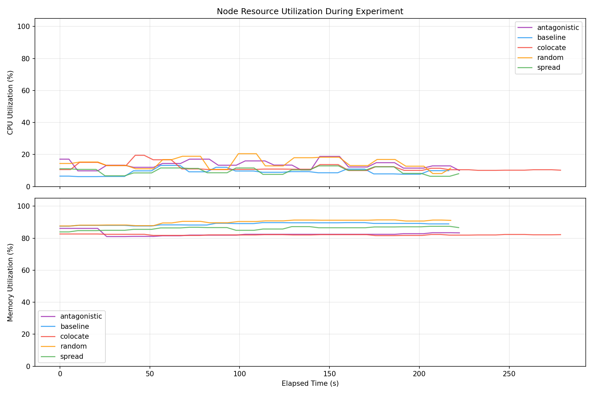
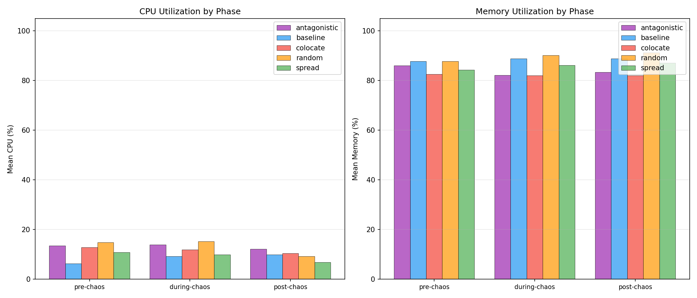
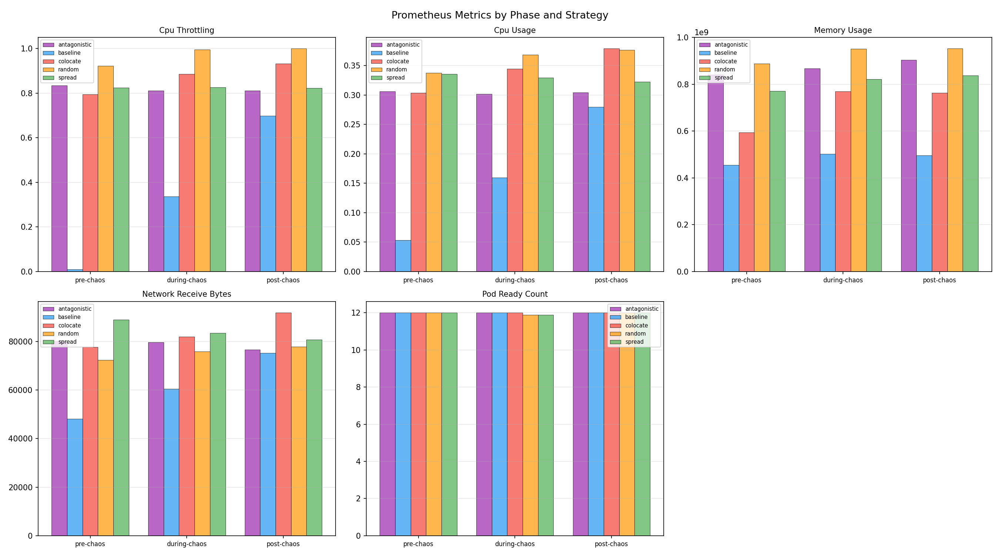

| Strategy | Runs | Avg Resilience Score | Pass Rate | Mean Recovery (ms) | Median Recovery (ms) | P95 Recovery (ms) |
|---|---|---|---|---|---|---|
| antagonistic | 3 | 66.0 | 0% | 1456.3 | 1452.2 | 2725.0 |
| baseline | 3 | 66.0 | 0% | 1399.3 | 1396.5 | 2303.0 |
| colocate | 3 | 0.0 | 0% | 1254.3 | 1339.0 | 1424.0 |
| random | 3 | 83.0 | 33% | 1471.3 | 1505.0 | 2523.0 |
| spread | 3 | 71.7 | 0% | 1399.2 | 1291.0 | 3357.0 |
| Strategy | Route | Pre-Chaos Mean (ms) | During Chaos Mean (ms) | During Chaos P95 (ms) | Post-Chaos Mean (ms) | Errors During Chaos |
|---|---|---|---|---|---|---|
| antagonistic | / | 210.6 | 206.3 | 389.8 | 181.4 | 5 |
| antagonistic | /_healthz | 111.0 | 122.6 | 218.5 | 233.5 | 0 |
| antagonistic | /cart | 211.0 | 265.9 | 390.1 | 274.4 | 0 |
| antagonistic | /product/OLJCESPC7Z | 160.1 | 215.2 | 316.1 | 184.1 | 4 |
| baseline | / | 184.3 | 304.9 +65% | 822.4 | 252.3 | 4 |
| baseline | /_healthz | 153.1 | 153.9 | 310.4 | 145.3 | 0 |
| baseline | /cart | 190.7 | 283.1 | 470.6 | 224.1 | 0 |
| baseline | /product/OLJCESPC7Z | 259.5 | 296.8 | 924.8 | 185.2 | 4 |
| colocate | / | 213.1 | 235.5 | 486.2 | 227.8 | 1 |
| colocate | /_healthz | 142.5 | 163.6 | 323.6 | 161.8 | 0 |
| colocate | /cart | 186.7 | 234.4 | 397.3 | 189.3 | 0 |
| colocate | /product/OLJCESPC7Z | 237.4 | 217.6 | 391.9 | 278.7 | 0 |
| random | / | 294.7 | 306.0 | 500.5 | 194.7 | 2 |
| random | /_healthz | 157.2 | 155.3 | 297.2 | 197.8 | 0 |
| random | /cart | 319.0 | 256.2 | 400.8 | 159.9 | 0 |
| random | /product/OLJCESPC7Z | 323.5 | 252.4 | 383.8 | 209.5 | 2 |
| spread | / | 199.2 | 203.7 | 377.1 | 185.8 | 5 |
| spread | /_healthz | 128.5 | 144.7 | 305.9 | 142.5 | 0 |
| spread | /cart | 259.1 | 238.5 | 311.8 | 214.2 | 0 |
| spread | /product/OLJCESPC7Z | 205.8 | 185.2 | 293.6 | 180.8 | 5 |
| Strategy | Operation | Pre-Chaos Ops/s | During Chaos Ops/s | During Chaos Latency (ms) | During Chaos Bandwidth | Post-Chaos Ops/s |
|---|---|---|---|---|---|---|
| antagonistic | redis-read | 61.6 | 64.0 | 15.68 | n/a | 68.8 |
| antagonistic | redis-write | 58.3 | 65.7 | 15.24 | n/a | 60.4 |
| antagonistic | disk-read | n/a | n/a | n/a | n/a | n/a |
| antagonistic | disk-write | n/a | n/a | n/a | n/a | n/a |
| baseline | redis-read | 61.5 | 56.9 | 17.76 | n/a | 60.6 |
| baseline | redis-write | 59.5 | 56.7 | 17.77 | n/a | 56.1 |
| baseline | disk-read | n/a | n/a | n/a | n/a | n/a |
| baseline | disk-write | n/a | n/a | n/a | n/a | n/a |
| colocate | redis-read | 57.8 | 58.3 | 17.26 | n/a | 59.5 |
| colocate | redis-write | 55.7 | 61.1 | 16.43 | n/a | 58.9 |
| colocate | disk-read | n/a | n/a | n/a | n/a | n/a |
| colocate | disk-write | n/a | 5.0 | 200.00 | 2.5 MB/s | n/a |
| random | redis-read | 54.8 | 59.0 | 17.09 | n/a | 61.4 |
| random | redis-write | 55.4 | 57.8 | 17.33 | n/a | 68.7 |
| random | disk-read | n/a | n/a | n/a | n/a | n/a |
| random | disk-write | 5.0 | 5.0 | 200.00 | 2.5 MB/s | n/a |
| spread | redis-read | 66.5 | 62.8 | 15.97 | n/a | 64.4 |
| spread | redis-write | 60.0 | 65.0 | 15.44 | n/a | 68.2 |
| spread | disk-read | n/a | n/a | n/a | n/a | n/a |
| spread | disk-write | n/a | 5.0 | 200.00 | 2.5 MB/s | n/a |
| Strategy | Phase | Mean CPU (%) | Mean Memory (%) | Samples |
|---|---|---|---|---|
| antagonistic | pre-chaos | 13.5 | 86.1 | 4 |
| antagonistic | during-chaos | 13.9 | 82.2 | 36 |
| antagonistic | post-chaos | 12.2 | 83.4 | 4 |
| baseline | pre-chaos | 6.3 | 87.8 | 4 |
| baseline | during-chaos | 9.3 | 88.9 | 36 |
| baseline | post-chaos | 9.9 | 88.9 | 3 |
| colocate | pre-chaos | 12.8 | 82.6 | 4 |
| colocate | during-chaos | 11.9 | 82.0 | 47 |
| colocate | post-chaos | 10.4 | 82.1 | 4 |
| random | pre-chaos | 14.9 | 87.8 | 4 |
| random | during-chaos | 15.2 | 90.2 | 36 |
| random | post-chaos | 9.2 | 91.2 | 3 |
| spread | pre-chaos | 10.9 | 84.3 | 4 |
| spread | during-chaos | 9.9 | 86.2 | 37 |
| spread | post-chaos | 6.9 | 87.1 | 3 |
| Strategy | Metric | Phase | Mean | Max | Samples |
|---|---|---|---|---|---|
| antagonistic | cpu_throttling | pre-chaos | 0.8340 | 0.8518 | 2 |
| antagonistic | cpu_throttling | during-chaos | 0.8106 | 0.8536 | 18 |
| antagonistic | cpu_throttling | post-chaos | 0.8115 | 0.8167 | 2 |
| antagonistic | cpu_usage | pre-chaos | 0.3064 | 0.3116 | 2 |
| antagonistic | cpu_usage | during-chaos | 0.3016 | 0.3136 | 18 |
| antagonistic | cpu_usage | post-chaos | 0.3045 | 0.3047 | 2 |
| antagonistic | memory_usage | pre-chaos | 840792064.0000 | 860422144.0000 | 2 |
| antagonistic | memory_usage | during-chaos | 868269169.7778 | 907706368.0000 | 18 |
| antagonistic | memory_usage | post-chaos | 904775680.0000 | 904921088.0000 | 2 |
| antagonistic | network_receive_bytes | pre-chaos | 80142.6411 | 81207.1226 | 2 |
| antagonistic | network_receive_bytes | during-chaos | 79693.6243 | 81974.5349 | 18 |
| antagonistic | network_receive_bytes | post-chaos | 76694.1603 | 78530.2759 | 2 |
| antagonistic | pod_ready_count | pre-chaos | 12.0000 | 12.0000 | 2 |
| antagonistic | pod_ready_count | during-chaos | 12.0000 | 12.0000 | 18 |
| antagonistic | pod_ready_count | post-chaos | 12.0000 | 12.0000 | 2 |
| baseline | cpu_throttling | pre-chaos | 0.0102 | 0.0132 | 2 |
| baseline | cpu_throttling | during-chaos | 0.3359 | 0.6295 | 18 |
| baseline | cpu_throttling | post-chaos | 0.6981 | 0.6981 | 1 |
| baseline | cpu_usage | pre-chaos | 0.0534 | 0.0534 | 2 |
| baseline | cpu_usage | during-chaos | 0.1597 | 0.2527 | 18 |
| baseline | cpu_usage | post-chaos | 0.2798 | 0.2798 | 1 |
| baseline | memory_usage | pre-chaos | 455077888.0000 | 456556544.0000 | 2 |
| baseline | memory_usage | during-chaos | 502061283.5556 | 534241280.0000 | 18 |
| baseline | memory_usage | post-chaos | 495550464.0000 | 495550464.0000 | 1 |
| baseline | network_receive_bytes | pre-chaos | 48062.7351 | 48311.6204 | 2 |
| baseline | network_receive_bytes | during-chaos | 60442.8171 | 73425.0167 | 18 |
| baseline | network_receive_bytes | post-chaos | 75329.3642 | 75329.3642 | 1 |
| baseline | pod_ready_count | pre-chaos | 12.0000 | 12.0000 | 2 |
| baseline | pod_ready_count | during-chaos | 12.0000 | 12.0000 | 18 |
| baseline | pod_ready_count | post-chaos | 12.0000 | 12.0000 | 1 |
| colocate | cpu_throttling | pre-chaos | 0.7953 | 0.7958 | 2 |
| colocate | cpu_throttling | during-chaos | 0.8854 | 0.9181 | 24 |
| colocate | cpu_throttling | post-chaos | 0.9323 | 0.9738 | 2 |
| colocate | cpu_usage | pre-chaos | 0.3036 | 0.3056 | 2 |
| colocate | cpu_usage | during-chaos | 0.3443 | 0.3671 | 24 |
| colocate | cpu_usage | post-chaos | 0.3790 | 0.3925 | 2 |
| colocate | memory_usage | pre-chaos | 593762304.0000 | 604041216.0000 | 2 |
| colocate | memory_usage | during-chaos | 769170773.3333 | 815747072.0000 | 24 |
| colocate | memory_usage | post-chaos | 762951680.0000 | 770199552.0000 | 2 |
| colocate | network_receive_bytes | pre-chaos | 77683.9590 | 78191.8891 | 2 |
| colocate | network_receive_bytes | during-chaos | 81937.2039 | 88644.6822 | 24 |
| colocate | network_receive_bytes | post-chaos | 91848.7997 | 92700.6271 | 2 |
| colocate | pod_ready_count | pre-chaos | 12.0000 | 12.0000 | 2 |
| colocate | pod_ready_count | during-chaos | 12.0000 | 12.0000 | 24 |
| colocate | pod_ready_count | post-chaos | 12.0000 | 12.0000 | 2 |
| random | cpu_throttling | pre-chaos | 0.9225 | 0.9368 | 2 |
| random | cpu_throttling | during-chaos | 0.9960 | 1.0303 | 18 |
| random | cpu_throttling | post-chaos | 1.0001 | 1.0086 | 2 |
| random | cpu_usage | pre-chaos | 0.3377 | 0.3399 | 2 |
| random | cpu_usage | during-chaos | 0.3686 | 0.3838 | 18 |
| random | cpu_usage | post-chaos | 0.3762 | 0.3777 | 2 |
| random | memory_usage | pre-chaos | 888352768.0000 | 895950848.0000 | 2 |
| random | memory_usage | during-chaos | 952346624.0000 | 996319232.0000 | 18 |
| random | memory_usage | post-chaos | 952932352.0000 | 953901056.0000 | 2 |
| random | network_receive_bytes | pre-chaos | 72363.4690 | 72488.4159 | 2 |
| random | network_receive_bytes | during-chaos | 75912.4424 | 77395.2506 | 18 |
| random | network_receive_bytes | post-chaos | 77832.1731 | 78956.1629 | 2 |
| random | pod_ready_count | pre-chaos | 12.0000 | 12.0000 | 2 |
| random | pod_ready_count | during-chaos | 11.8889 | 12.0000 | 18 |
| random | pod_ready_count | post-chaos | 12.0000 | 12.0000 | 2 |
| spread | cpu_throttling | pre-chaos | 0.8239 | 0.8443 | 2 |
| spread | cpu_throttling | during-chaos | 0.8261 | 0.8619 | 18 |
| spread | cpu_throttling | post-chaos | 0.8232 | 0.8311 | 2 |
| spread | cpu_usage | pre-chaos | 0.3354 | 0.3394 | 2 |
| spread | cpu_usage | during-chaos | 0.3291 | 0.3403 | 18 |
| spread | cpu_usage | post-chaos | 0.3227 | 0.3277 | 2 |
| spread | memory_usage | pre-chaos | 771913728.0000 | 774316032.0000 | 2 |
| spread | memory_usage | during-chaos | 822709134.2222 | 854528000.0000 | 18 |
| spread | memory_usage | post-chaos | 837177344.0000 | 837177344.0000 | 2 |
| spread | network_receive_bytes | pre-chaos | 88946.8929 | 89704.0944 | 2 |
| spread | network_receive_bytes | during-chaos | 83496.4076 | 87027.0512 | 18 |
| spread | network_receive_bytes | post-chaos | 80682.9650 | 81411.3027 | 2 |
| spread | pod_ready_count | pre-chaos | 12.0000 | 12.0000 | 2 |
| spread | pod_ready_count | during-chaos | 11.8889 | 12.0000 | 18 |
| spread | pod_ready_count | post-chaos | 12.0000 | 12.0000 | 2 |








